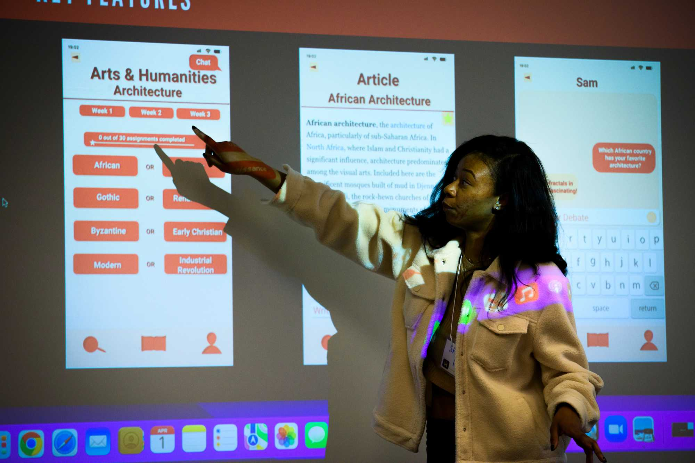

Projects change as teams learn more. Make progress visible, listen to your partner, and adjust your plan together when new needs or constraints emerge.
Phase 3: During the Experience
Use regular check-ins to connect daily tasks with your shared project goals.

Active Project Goals
Manage the scope: Compare new requests with the agreed deliverables. Discuss changes to time, resources, and priorities before committing to extra work.
Support your team: Give tasks clear owners, check workloads, and raise concerns early so everyone can contribute.
Communicate progress: Share completed work, decisions needed, current obstacles, and the next steps with your partner.
Practice ethical research: Explain how information will be used, respect participant choices, and follow your course and partner requirements for handling data.
Recommended Project Process
Review the plan: Check milestones, task ownership, and upcoming deadlines at each team meeting.
Share work in progress: Bring a draft, prototype, or research summary to your partner rather than waiting for a final deliverable.
Listen to feedback: Ask what is useful, what is missing, and which needs should take priority.
Record decisions: Document agreed changes, who will act on them, and how they affect the timeline.
Reflect and adjust: Discuss what helped the team and choose one improvement for the next stage.
Working Through Challenges
When a deadline is at risk, explain the obstacle early and offer realistic options. Agree with your partner on what to reduce, postpone, or revise.
When disagreements arise, describe the specific issue, listen to each person's perspective, and return to the team's shared commitments. Ask your instructor or ELO contact for support when the team cannot resolve an issue.
Questions to Consider
Are we working on the partner's current priorities?
Does everyone know their next task and deadline?
Whose perspective is missing from our research or decisions?
Have we explained how participant information will be used?
Which assumptions have changed after feedback?
What should we document now for the final handoff?